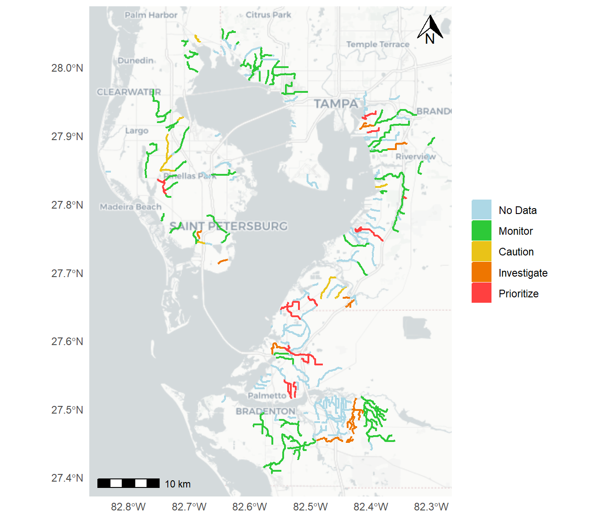

BH-9
Enhance ecosystem values of tidal tributaries
OBJECTIVES:
Improve the ecosystem value of tidal tributaries of Tampa Bay. Develop indicators of tidal tributary health and function. Continue monitoring in tidal tributaries. Identify and implement projects to remove artificial barriers in tidal tributaries. Improve public awareness of the value and benefits of healthy tidal tributaries.
STATUS:
Ongoing. Originally added to the CCMP as a 2012 Amendment, this revision incorporates pilot projects to remove or modify structures, and monitor changes in water quality, vegetation and fisheries use. This update also summarizes new research to characterize tidal tributaries to facilitate development of monitoring metrics.
BACKGROUND:
Tidal tributaries are an important, diverse and often-neglected ecosystem in the bay watershed. Distinctly different from freshwater systems and the open bay, these variable-salinity streams, creeks and back-water systems serve an important niche in fisheries production, nutrient cycling, wading bird foraging and flood prevention or detention.

Since 2006, select tidal creeks of the Tampa Bay watershed have been monitored to evaluate tidal patterns, shoreline vegetation, fish populations, sediment quality and nutrient levels (see Action FW-5). Despite water quality often characterized by low dissolved oxygen levels and higher relative nutrient and chlorophyll levels, these systems have been shown to support high densities of juvenile fishes and baitfish species. Research coordinated by the Tampa Bay Estuary Program (TBEP) found that juvenile snook — a premier sport fish — were up to 36 times more abundant inside the sampled tributaries than outside (Sherwood 2008).
Sherwood, E. 2008. “Tampa Bay Tidal Tributary Habitat Initiative: Integrated Summary Document.” 02-08. St. Petersburg, Florida: Tampa Bay Estuary Program. https://drive.google.com/file/d/1ox3GGKs_Ab3VorrHF4EhZQZFd1ETjK7o/view?usp=drivesdk.
Janicki Environmental and Mote Marine Laboratory. 2020. “Southwest Florida Tidal Creeks: Nutrient Management Framework and Indicator Development.” 02-20. St. Petersburg, Florida: Tampa Bay Estuary Program. https://drive.google.com/file/d/1n4okSVtNSswVXv1Lje-qMopNZdvUrQnt/view?usp=drivesdk.
Current efforts include research supported by US Environmental Protection Agency (EPA) Wetlands Development Grants to develop environmental indicators of tidal tributary health and nursery function (Janicki Environmental and Mote Marine Laboratory 2020). Due to large differences from creek to creek, results suggest there is no single optimum water quality criterion for setting appropriate nutrient targets and thresholds to maintain ecological productivity. Instead, tidal creek health may be more reliably predicted by a nutrient management framework that includes a variety of indicators, especially recruitment and survival of juvenile fishes. Continued and long-term tidal creek biological monitoring is warranted, especially expansion of monitoring efforts to inventory ecological conditions in unsampled creeks (see Action FW-5). A tidal creeks dashboard provides site-specific creek condition indicators to help managers prioritize management actions.
Most of the more than 100 tidal creeks in the bay watershed are less than six miles long and narrow, averaging about 75–150 feet wide. Many have been significantly altered by dredging, road construction, shoreline development and channelization to facilitate flood control. A 2012 inventory commissioned by TBEP identified 344 structures that are potentially blocking or impeding tidal flows and fish movement in bay tributaries (Deitche and Dooris 2012). These barriers include water control structures, weirs, railroad bridges, culverts and road crossings. Fish and wildlife also are impacted by channelizing and ditching natural creeks for mosquito control, flood prevention and general upland development.
Deitche, S., and P. Dooris. 2012. “Tampa Bay Salinity Barrier Inventory & Restoration Feasibility Matrix.” 09-12. St. Petersburg, Florida: Tampa Bay Estuary Program. https://drive.google.com/file/d/13YBw59NbRalybAeF2U_bht602CwG489H/view?usp=drivesdk.
Removing some of these “salinity barriers” could benefit snook and other fish by promoting more natural fluctuations in water levels that occur with rising and falling tides, instead of the irregular and often large pulses of nutrient-laden waters released from the highly altered systems during heavy rains. Removal or modification of physical barriers also enhances the overall connectivity of the bay’s tidal habitats.
Restoration efforts are often complicated by such factors as public versus private ownership of the barriers and adjacent land, potential impacts to surrounding property owners, contrasting management objectives (flood control vs. water quality protection) and overall water quality benefits of restoring hydrologic function relative to costs.

Pilot projects sponsored jointly by TBEP and the Southwest Florida Water Management District (SWFWMD) in Pinellas County (Channel 5) and Hillsborough County (Channels A and G) have helped to quantify costs, techniques and issues, creating a basic framework by which additional projects can be evaluated and incorporated into future restoration plans. A restoration of Roosevelt Canal flowing into Old Tampa Bay is underway in 2023. Projects like these and related public outreach and education are prioritized for Bipartisan Infrastructure Law funding.
Modifying a weir and restoring a shoreline near the mouth of Channel 5, a highly channelized tributary just east of the St. Petersburg-Clearwater Airport, should attract small baitfish, crabs and other marine creatures that serve as food for larger fish like snook as well as wading birds. Channel 5 connects to what was originally a natural tidal creek (Badwater Creek) that was ditched in the 1950s to drain the surrounding wetlands for development and agricultural uses. When complete, this project will create more than 76 acres of low-salinity habitat.
Additionally, two water control structures on Channels A and G in the Rocky Creek and Brushy Creek watersheds in upper Tampa Bay are being kept open indefinitely to monitor water quality and fisheries changes resulting from unrestricted tidal flow. Channels A and G were originally constructed to prevent flooding of nearby lands, and the two structures were installed in the 1970s to prevent salt water from moving upstream and penetrating to the groundwater system through breaches created by construction of the channels.
As part of the pilot study, manatee exclusion barriers on both structures also were removed so that all fish and wildlife, including manatees, could travel upstream. Vegetation above and below the structures is being monitored to determine if saltwater wetland plants like marsh grass and mangroves will expand over time. Other techniques currently being used to restore tidal flows to support fish and wildlife include blocking mosquito control ditches and blasting or excavating mounds created by ditching in mangrove forests.
Note
Some 159 of the 344 structural barriers identified on tidal creeks in the bay watershed are in Old Tampa Bay, contributing to persistent water quality problems there.
Public workshops held in conjunction with both of these pilot projects highlight the importance of communicating project goals to nearby residents, and promoting public understanding of tidal creeks as vital nurseries for popular recreational fish, foraging grounds for wading birds, natural stormwater treatment areas and resilient habitats that can adapt to rising seas.

Together, these research, monitoring and restoration efforts represent a comprehensive approach to improved overall management and protection of tidal tributaries throughout the bay watershed.